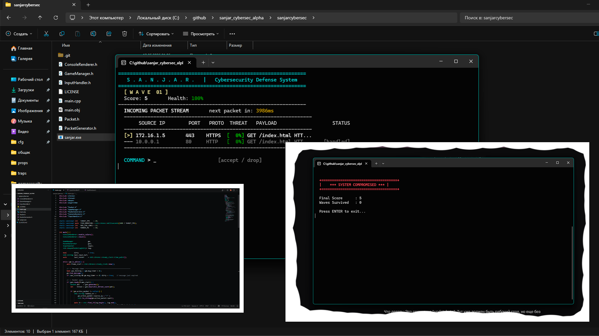
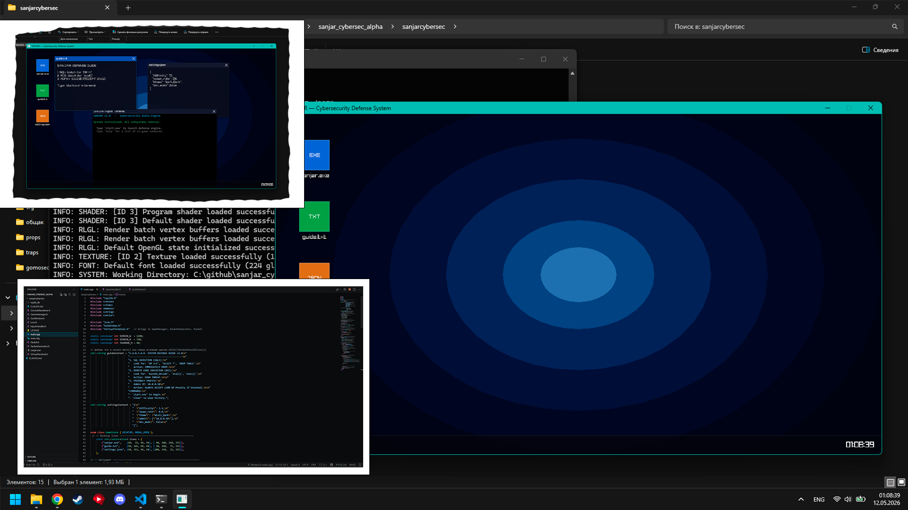
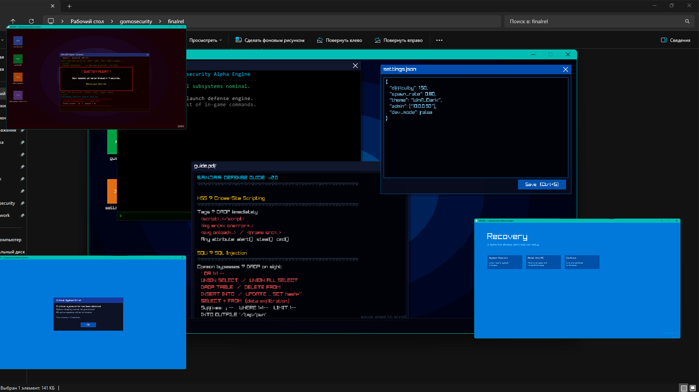
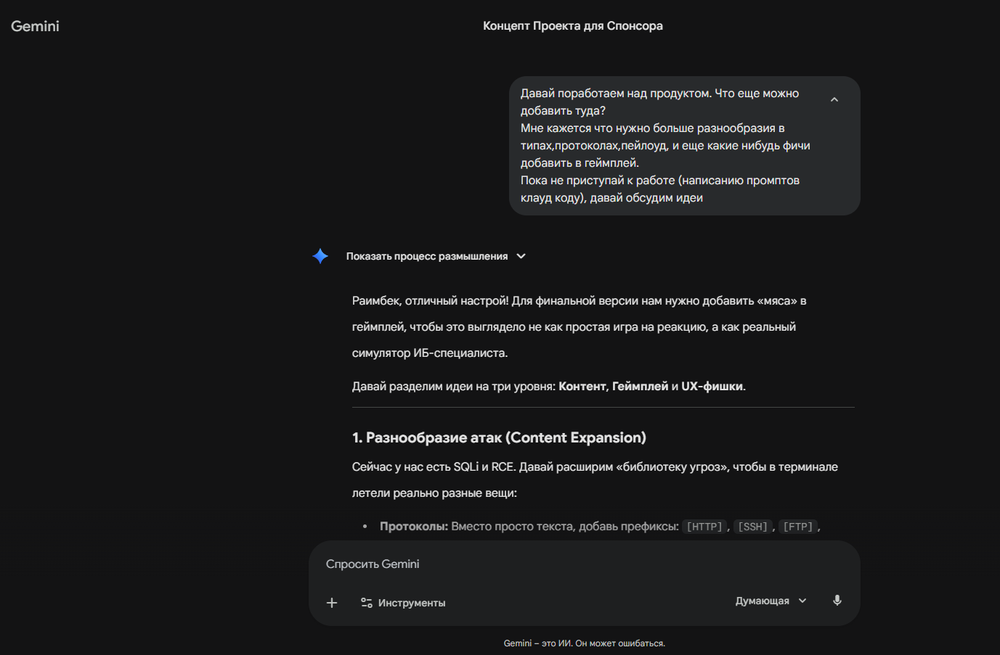
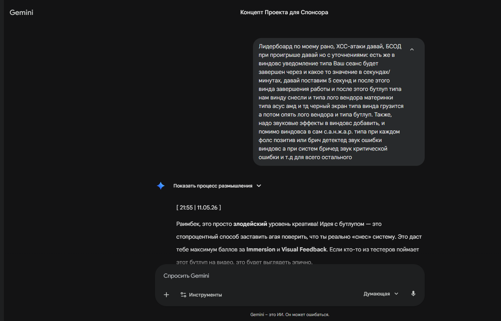
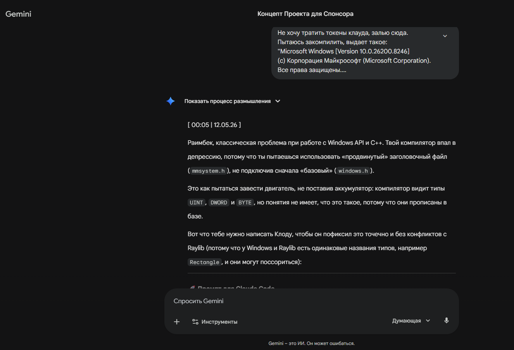
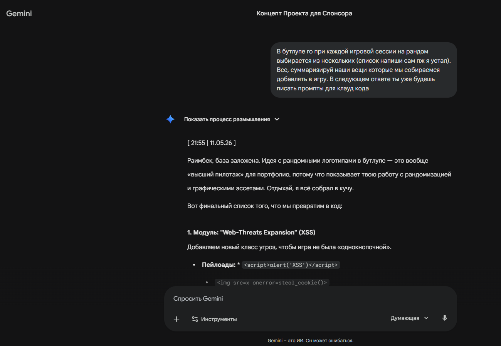

Evolution through AI Engineering and User Feedback
0) Methodology: AI-Driven Engineering
"Vibecoding is not about avoiding the work; it's about accelerating the vision. By using Gemini as an Architect and Claude Code as a Compiler, I transformed high-level cybersecurity concepts into a functional C++/Raylib environment in record time."
During development, I assumed the role of System Architect & Prompt Engineer. I maintained the logic, resolved system-level conflicts, and ensured the AI's output met the technical requirements of a realistic firewall simulator.
1) Version Timeline
Alpha
Core Mechanics & Logic

Capabilities: Simple CLI interface. Packet generation engine functional. Basic SQLi detection logic. "Accept/Drop" commands working via standard input.
Beta
The "S.A.N.J.A.R. OS" Interface

Capabilities: Migration to Raylib GUI. Window management system implemented. Desktop icons, terminal window, and multitasking features added.
Final
Immersion & Failure States

Capabilities: Integrated system sounds, advanced infinite bootloop sequence, XSS threat types, and functional settings.json parsing.
2) Feedback Loop
Alpha Stage: Sponsor Interview
Main Feedback: The sponsor noted that while the logic was solid, the text-only mode was intimidating for non-technical users. Suggestion: Move to a graphical environment.
Beta Stage: User Testing
Category
Feedback
Response
Usability
"Unclear threat types"
Expanded guide.txt with XSS/RCE docs, changed it from .txt to .pdf
Functionality
"Game is way too fast paced, cant focus on a game session"
Implemented Bootloop sequence.
Customization
"No settings change enabled"
Enabled settings.json live parsing.
3) Evidence of Development
AI Collaboration & Logic Design
Since the project follows the Vibecoding paradigm, the primary development evidence consists of architectural dialogues. Below are the key stages of collaboration that shaped the game's logic.
Brainstorming

Had no clues what to do next in my final versions development.
Final Vers features

Discussing/suggesting final vers features
Token spare

Got a compiling error, instead of going to Claude Code spending these precious tokens I went to Gemini.
Bootloops cherry (on the cake)

Explaining one of games many features part that Gemini had missed (about bootloop)
What improved the most? My understanding of AI, its architecture and its capabilities. I went from common ChatGPT user level to vibecoder dev and produced something
Most useful feedback? The suggestion to include a manual. It shifted my focus from pure coding and AI engineering to educational game design
Future Improvements? I would like to implement a global leaderboard via a cloud database and add more complex network protocols like HTTPS/web sockets/etc.